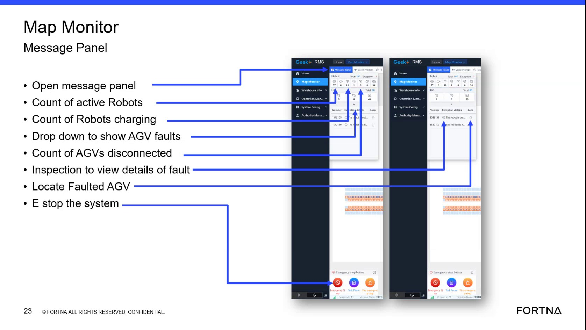

| Procedure ID | proc_interpret_the_disconnected_agv_count_on_the_map_monitor_v1 |
|---|---|
| Title | Interpret The Disconnected AGV Count On The Map Monitor |
| Procedure Type | reference |
| Primary Role | L1_support |
| Support Safe | Yes |
| Validation Status | needs_sme_review |
| Merge Status | source_finalized |
Use the map monitor disconnected AGV count to understand how many AGVs the RMS considers disconnected, and compare that count against source-described causes such as Wi-Fi communication loss or an AGV being turned off.
Use when reviewing the map monitor summary area to understand the meaning of the disconnected AGV count and to compare the displayed count against source-described disconnect causes.
Responsible role: L1_support
Instruction:
Open or view the map monitor summary area and locate the disconnected AGV count indicator.
Expected result:
The disconnected AGV count field is visible in the map monitor summary area.
Screens / Images:

Stop or Escalate If:
Responsible role: L1_support
Instruction:
Read the displayed disconnected AGV count from the map monitor summary area.
Expected result:
A numeric disconnected AGV count is identified from the display.
Screens / Images:
Stop or Escalate If:
Responsible role: L1_support
Instruction:
Interpret the displayed count as the number of AGVs that have lost communication from RMS. Use the source explanation that RMS is the application running on the server and that AGVs communicate over Wi-Fi.
Expected result:
The disconnected count is understood as a communication-state indicator from RMS, not just a generic AGV status number.
Stop or Escalate If:
Responsible role: L1_support
Instruction:
Check whether the disconnected condition could match source-described causes such as AGV Wi-Fi communication loss or an AGV being turned off. Treat these as possible causes only unless directly supported by observation.
Expected result:
Any observed possible cause is limited to source-supported explanations and is not overstated.
Stop or Escalate If:
Responsible role: L1_support
Instruction:
Record the disconnected AGV count and the observed possible cause if it is directly supported by site observation. Do not record an unsupported root-cause conclusion.
Expected result:
The disconnected count is documented with only source-supported and observation-supported interpretation.
Stop or Escalate If: